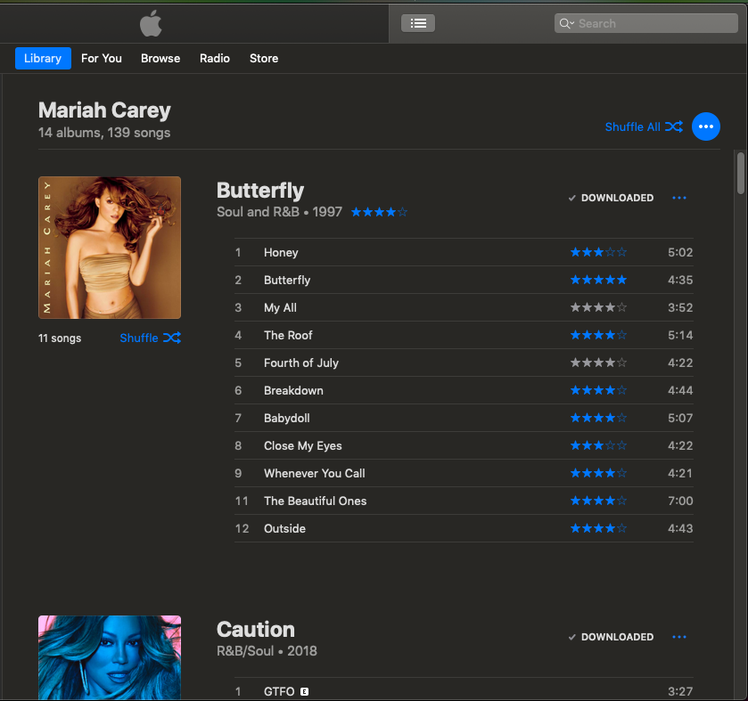

Mariah The Vocalist
I still remember the very first time I heard Mariah Carey sing. I was watching music videos and “Vision of Love” came on. I sat there watching the tv in a trance. Her voice sounded like birds singing. Today, I still get a physical reaction whenever I hear Mariah Carey singing. It's a feeling of calmness and peacefulness. When I'm having a bad day I turn on my Mariah Carey playlist and it helps tremendously.
I own 14 albums totalling 139 of her songs.

My playlist has a little less than that, but totals almost 8 hours of continous music.

Mariah Carey Wiki by Fandom, lists all of her songs.
I'm also a huge karoake fan and wish my YouTube karaoke playlist had more Mariah Carey material.
Mariah The Performer
Some of my friends like to compare Mariah Carey to newer artists, like Beyoncé. I will agree that Mariah is no Lady Gaga or even a Britney Spears. She doesn't dance much and only uses a small number of dancers during her perfomances. However, her vocals are so strong that she doesn't need all of the extras to be great.
I was lucky enough to attend the Caution World Tour this year and I had a wonderful time. My sister came from Phoenix and attended with me. She's not a forever fan like I am, but she loved the concert, too.
On the next page you can find clips from the concert. They don't do her any justice as they were recorded using my cellphone, but I'm sharing with you anyway. Enjoy!
Mariah the Businesswoman
I know from watching interviews with and about Mariah Carey, that she is very hands on when it comes to creating her music. She writes a lot of her own lyrics. She's very particular about her sound, also. But that's not all she does.
Mariah's Perfumes

Did you know that Mariah Carey also has a line of pefumes? I started collecting her perfumes a few years ago. I wanted them because they were in the cutest bottles and of course, because Mariah's name was attached to them. I collected the purple bottle, M by Mariah Carey, even though I didn't care for it's smell. Her top three perfume scents are:
- M by Mariah Carey Luscious Pink
- Mariah Carey Ultra Pink
- Mariah Carey Forever